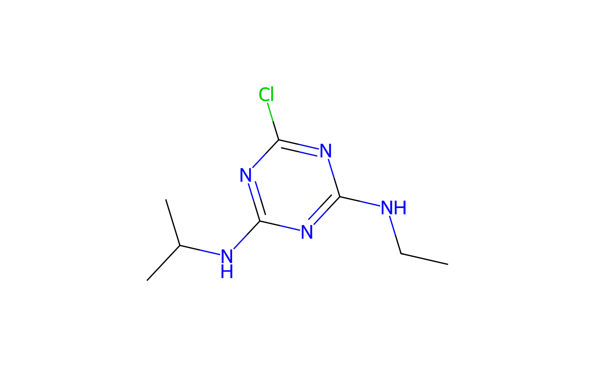

The class is initialised with an identifier which is generally an ISO common name. Additional chemical information is retrieved from the internet if available.
An R6Class generator object
chents::chent -> pai
isoISO common name according to ISO 1750 as retreived from pesticidecompendium.bcpc.org
bcpcList of information retrieved from pesticidecompendium.bcpc.org
Inherited methods
chents::chent$add_PUF()chents::chent$add_TP()chents::chent$add_cwsat()chents::chent$add_p0()chents::chent$add_soil_degradation()chents::chent$add_soil_ff()chents::chent$add_soil_sorption()chents::chent$add_transformation()chents::chent$emf()chents::chent$get_chyaml()chents::chent$get_pubchem()chents::chent$get_rdkit()chents::chent$pdf()chents::chent$png()chents::chent$try_pubchem()
new()pai$new(
iso,
identifier = iso,
smiles = NULL,
inchikey = NULL,
bcpc = TRUE,
pubchem = TRUE,
pubchem_from = "auto",
rdkit = TRUE,
template = NULL,
chyaml = TRUE
)# On Travis, we get a certificate validation error,
# likely because the system (xenial) is so old,
# therefore don't run this example on Travis
if (Sys.getenv("TRAVIS") == "") {
atr <- pai$new("atrazine")
print(atr)
if (!is.null(atr$Picture)) {
plot(atr)
}
}
#> BCPC:
#> PubChem:
#> Trying to get chemical information from RDKit using PubChem_Canonical SMILES
#> CCNC1=NC(=NC(=N1)Cl)NC(C)C
#> Did not find chyaml file ./atrazine.yaml

#> <pai> with ISO common name $iso atrazine
#> <chent>
#> Identifier $identifier atrazine
#> InChI Key $inchikey MXWJVTOOROXGIU-UHFFFAOYSA-N
#> SMILES string $smiles:
#> PubChem_Canonical
#> "CCNC1=NC(=NC(=N1)Cl)NC(C)C"
#> Molecular weight $mw: 215.7
#> PubChem synonyms (up to 10):
#> [1] "atrazine" "1912-24-9" "Gesaprim" "Oleogesaprim" "Aktikon"
#> [6] "Atranex" "Chromozin" "Atazinax" "Atrasine" "Gesoprim"